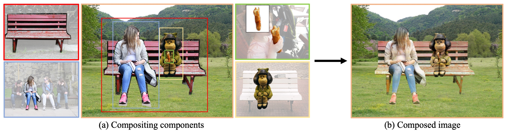
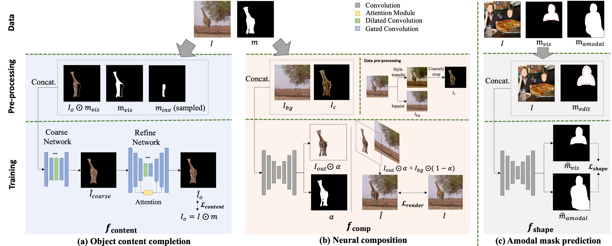
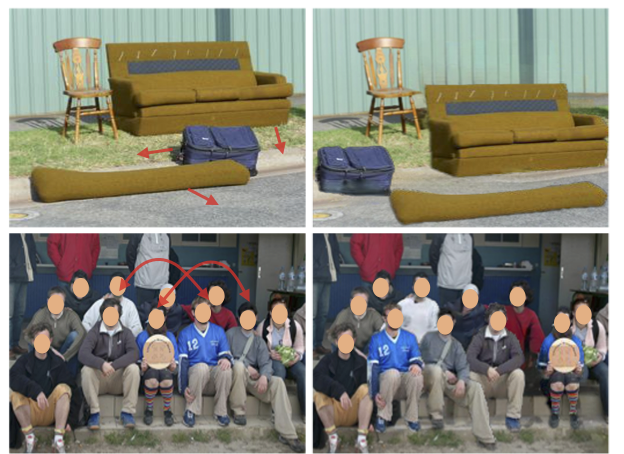
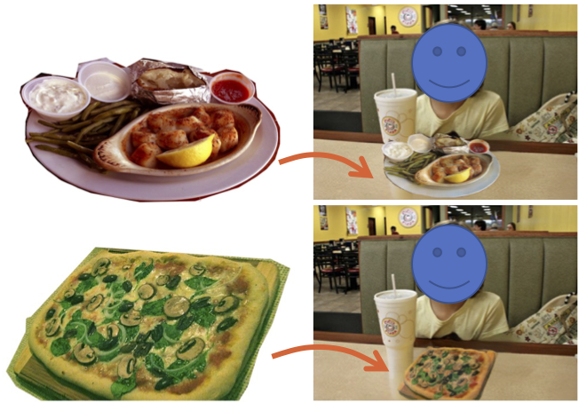

1University of Illinois, Urbana-Champaign
2University of Maryland, College Park
3Meta
Image composition aims to blend multiple objects to form a harmonized image. Existing approaches often assume precisely segmented and intact objects. Such assumptions, however, are hard to satisfy in unconstrained scenarios. We present Amodal Instance Composition for compositing imperfect -- potentially incomplete and/or coarsely segmented -- objects onto a target image. We first develop object shape prediction and content completion modules to synthesize the amodal contents. We then propose a neural composition model to blend the objects seamlessly. Our primary technical novelty lies in using separate foreground/background representations and blending mask prediction to alleviate segmentation errors. Our results show state-of-the-art performance on public COCOA and KINS benchmarks and attain favorable visual results across diverse scenes. We demonstrate various image composition applications such as object insertion and de-occlusion.
Composition with imperfect instances. Our method takes an ordered collection of imperfect instances (i.e., partially occluded and/or coarsely cropped) from multiple source images (instances identified by colored bounding boxes) and a background image as inputs (a), and produces harmonized composition (b). We achieve this via a unified framework that estimates the precise shape and content of each object and adjusts the object appearances to be mutually compatible.


(left: original images. The arrows indicate object moving directions; right: results with objects re-shuffled.)

(We insert the dishes into the background image. Our method harmonizes the content and refines the imperfect masks.)

@inproceedings{zhuang2022amico,
title = {AMICO: Amodal Instance Composition},
author = {Zhuang, Peiye and
Huang, Jia-bin and
Saraf, Ayush and
Rong, Xuejian and
Kim, Changil and
Demandolx, Denis},
booktitle = {Proc. BMVC},
year = {2021},
}
Some of the work was completed while P.Z. was at Meta.